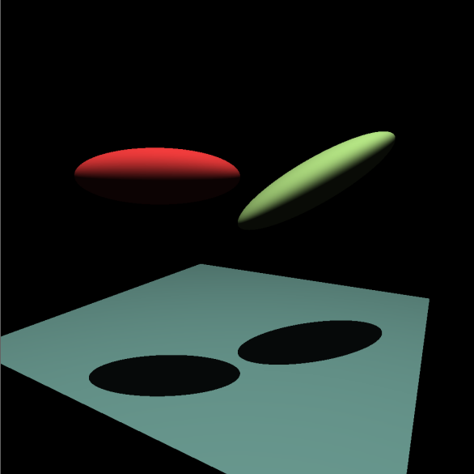

Graphic Simulations
Simulations OpenGL développés avec C++.
Plant Life
Simulations graphiques de paysage forestier.
-

Simulation 3D aléatoire basé sur des courbes de cosinus.
-

Produit final, y compris les arbres générés récursivement.
Raytracing
Une implémentation de Raytracing sur des figures simples.
-

Raytracing simple sur des formes elliptiques et un plan.
Avec des ombres.
-

Raytracing final avec ombres, réflexion, composant spéculaire et anticrénelage.
Filter Mailer
Application Python développée indépendamment pour les petites entreprises.
Permet à l’utilisateur d’importer et de filtrer une liste d’e-mails à partir d’une feuille de calcul Excel et envoyer ensuite un e-mail collectif à toutes les adresses qui passent le filtre. Comprend un système de sauvegarde pour le cas où l’exécution est interrompue (une nouvelle feuille de calcul est enregistrée dans un dossier de sauvegarde).
-

Exemple de fonctionnalité d’entrée et de filtrage. Les exclusions sont appliquées en plus des inclusions.
-

Fenêtre de création d’e-mail. Peut inclure une image, qui est ajoutée au corps HTML de l’e-mail.
-

Fenêtre de connexion et d’envoi. Prend en charge les serveurs SMTP.